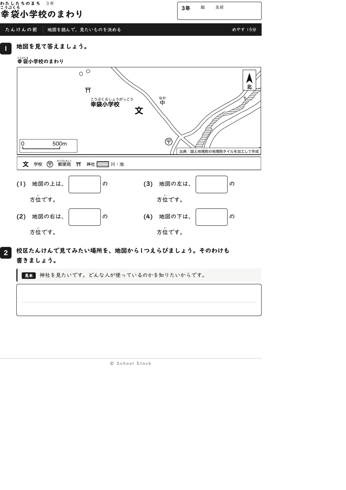
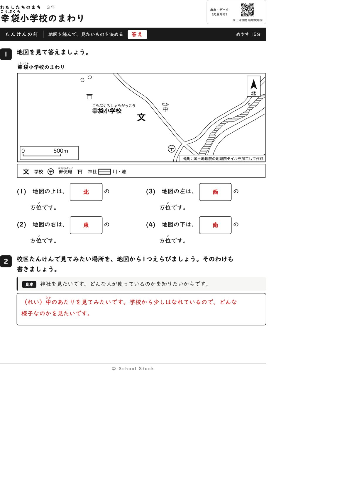
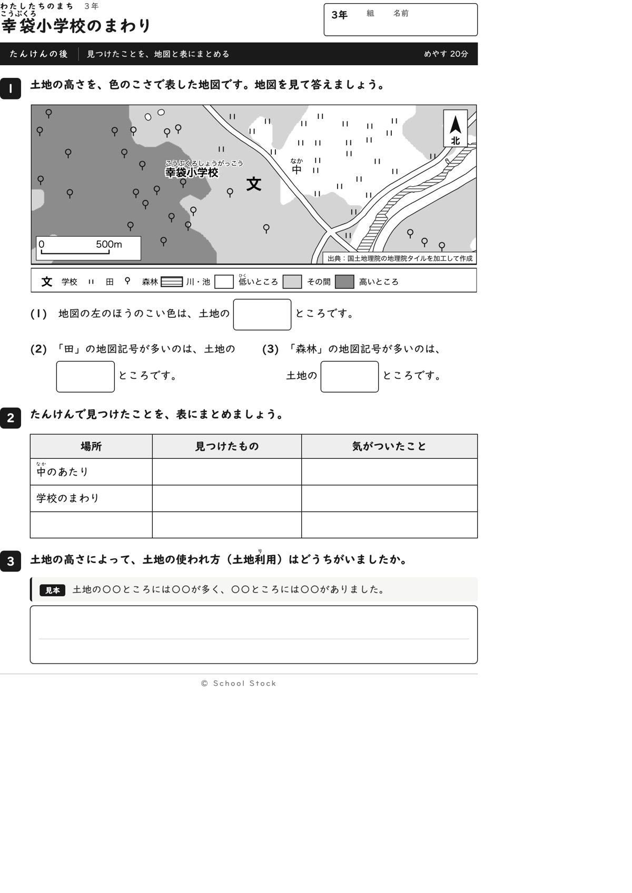
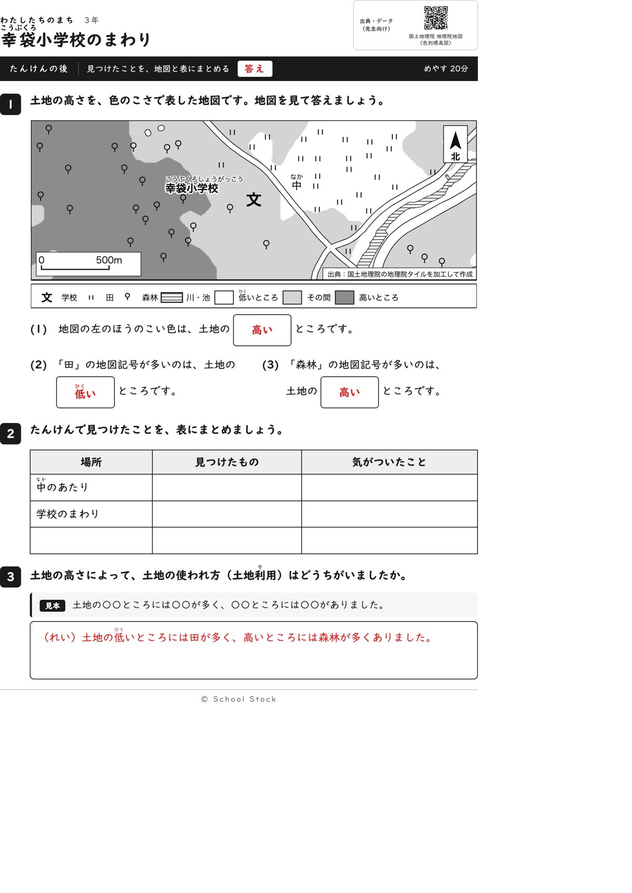
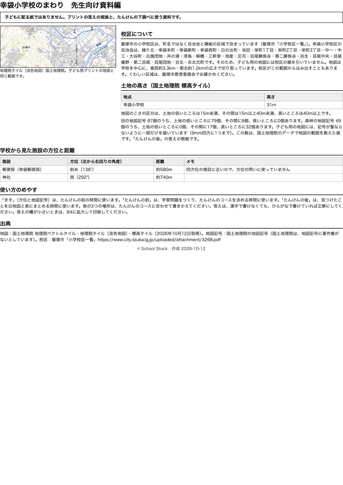

紙





直すところ
直すところはありません。
1回目のレビューで出た直し（2件・道具を直して作り直しました）
| 紙 | どこ | 何が困るか |
|---|---|---|
| たんけんの前 | 地図の下の凡例（「線路」の項目） | 凡例に線路の記号が載っていますが、地図の中に線路はありません。子どもが線路を探して時間を使い、見つからなくて混乱します。たんけんの後の地図の凡例も同じです。 |
| たんけんの後 | 3番の書く問い（土地の高いところと低いところで、土地の使われ方はどうちがいましたか） | 子ども用の紙に見本がなく、3行の白い欄だけです。たんけんの前の2番には見本があるのに、ここにはありません。例がないと1行目で手が止まる子と、書く前に諦める子が出ます。 |
専門家団の声（いまの紙を見て）
香月八重筆頭・全学年
2回目に残した注文はありませんでした。今回も、前は上下左右を方位で答える四問、後は左の濃い色、田、森林を高い低いで答える三問で、答えは地図を見れば誰でも同じになります。斜めにある郵便局は方位の問いに使っておらず、方位の答えを別の問いの文に出すこともありません。この紙でつかむことは、低い土地には田、高い土地には森林が多いことだと1文で言えます。前の四問は上下左右だけで少しやさしいですが、4月の最初の学習として合っています。
日隈耕平社会
凡例は学校、郵便局、神社、川・池で、地図にあるものだけが載っています。学校の文のそばに施設の記号はありません。標高は学校が31mで「その間」の色の上です。田は87個のうち低いところが79個、森林は49個のうち高いところが32個で、問いの答えと数が合い、差も3倍以上あります。資料編に「記号は一部だけを描いています」という説明があります。学校名の文字は森林の記号の近くにありますが、白い縁取りで読め、重なっていません。小さな点として、田の記号が道の線に触れている所が2か所あります。数えるのに困るほどではありません。
藤川湊すぐ終わる子
前は4問とも短い時間で終わります。見たい場所を選ぶ2番が一番考えるところです。後は田と森林を数えて確かめたくなる地図なので、早く終わった子の遊びになります。
田淵さくら例がないと止まる子
前の2番は「中のあたり」の例があって、まねして書けます。後は(1)から(3)が同じ文の形なので、1つ分かれば次も書けます。3番に型があるので書き出せそうです。
轟大和読む前に諦める子
前は上下左右を答えるだけなので全部できそうです。後は左の濃い色、田の多いところ、森林の多いところと、地図を見るだけで答えられます。3番は型があるので書く勇気が出そうです。